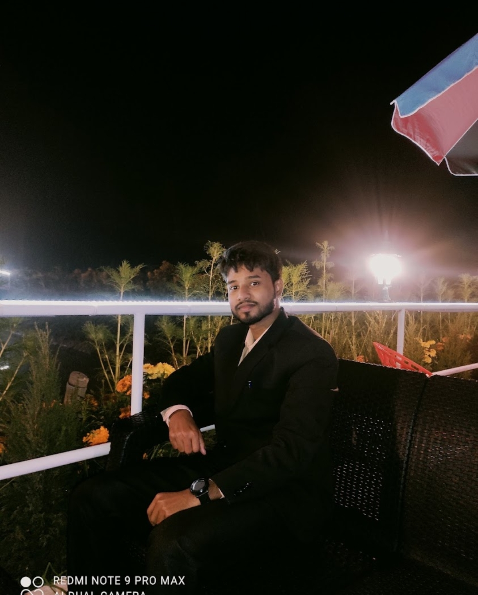

Md.Kawsar
Bsc Enginer(cse)
I am form pirojpur distic and my village name is sutiakati.
I compleate my diploma in computer technology form barishal polytechnic instituteand also compleate Bsc in computer science and enginiaring form world university of bangladesh.I worked with many poject. shekh rasel Digital Lab Literacy Troubleshooting and Maintenance is one of them.There i worked as a techer trainer.